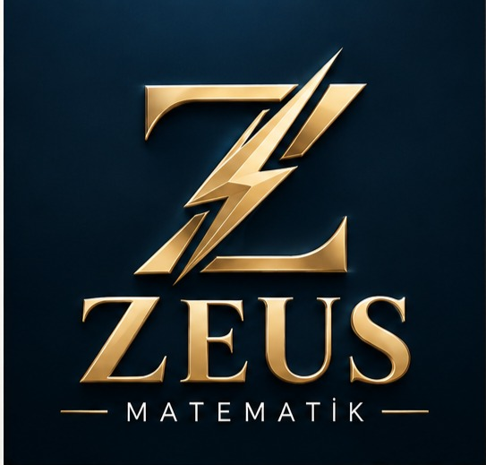

f(x) = ax² + bx + c
a² + b² = c²
sin²x + cos²x = 1
YAZILI
7
3
1
gün kaldı
SAYIN VELİMİZ
Matematik yazılısı yaklaşıyor mu
?
Konular birikti, çalışma son geceye kaldı.
ÇÖZÜM · HAFTALIK PLAN
1. gün
Okul müfredatına göre konu tekrarı
2. gün
Yazılı tipi soru çalışması
3. gün
Sınav öncesi genel tekrar
Telaş değil,
planlı hazırlık.

Çocuğunuzun sınıfına uygun birebir ders
Yüz yüze · İstanbul Avrupa Yakası
Ders Programını Sorun